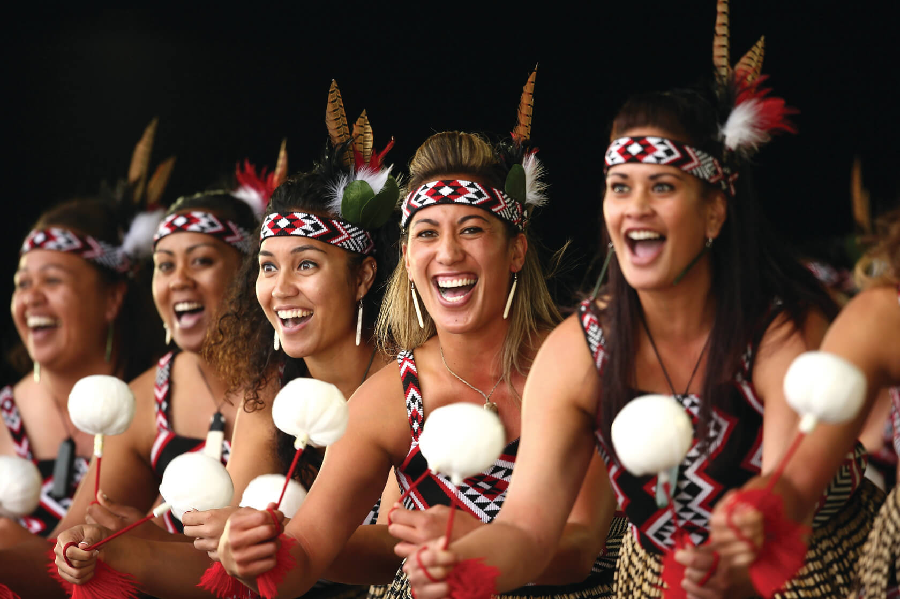
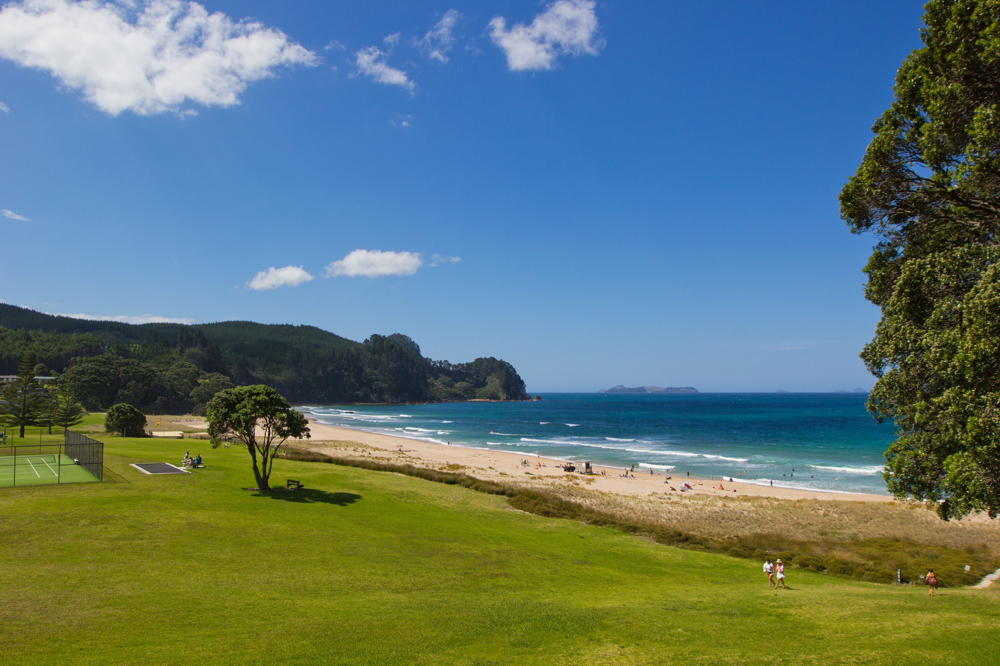
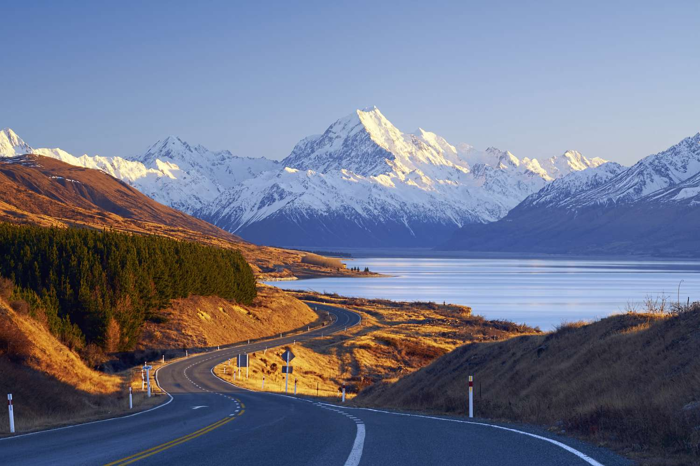
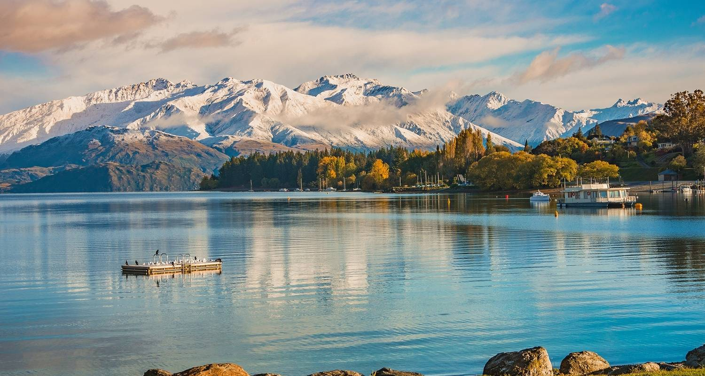
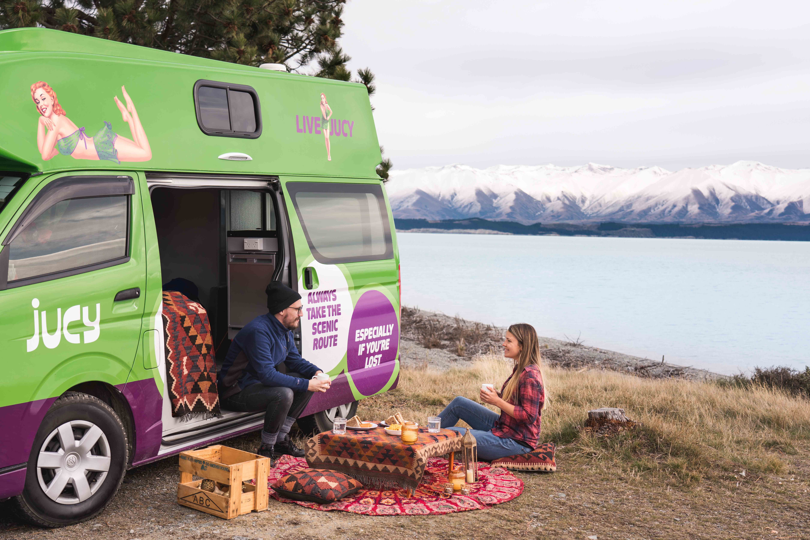

History
Culture
Early Māori adapted the tropically based east Polynesian culture in line with the challenges associated with a larger and more diverse environment, eventually developing their own distinctive culture. Social organisation was largely communal with families (whānau), subtribes (hapū) and tribes (iwi) ruled by a chief (rangatira), whose position was subject to the community's approval. The British and Irish immigrants brought aspects of their own culture to New Zealand and also influenced Māori culture, particularly with the introduction of Christianity. However, Māori still regard their allegiance to tribal groups as a vital part of their identity, and Māori kinship roles resemble those of other Polynesian peoples. More recently, American, Australian, Asian and other European cultures have exerted influence on New Zealand. Non-Māori Polynesian cultures are also apparent, with Pasifika, the world's largest Polynesian festival, now an annual event in Auckland.
Destinations
North Island Highlights
Auckland ("City of Sails"): Sky Tower, Waiheke Island (wine tours), and black-sand beaches (Piha).
Rotorua (Geothermal Wonderland): Geysers, mud pools, Māori cultural shows, and Zorbing (adventure sport).
Wellington (Capital City): Te Papa Museum, Wētā Workshop (Lord of the Rings effects studio).
Bay of Islands (Historic & Scenic): Waitangi Treaty Grounds, dolphin watching, and sailing.

South Island Highlights
Queenstown (Adventure Capital): Bungee jumping, skiing, and Fergburger (legendary burger joint).
Christchurch (Garden City): Rebuilt after earthquakes, with a creative arts scene.
Milford Sound (UNESCO Fjord): Stunning waterfalls, cruises, and hiking (Kepler Track).
Wanaka (Scenic Lake Town): #ThatWanakaTree (Instagram famous), hiking, and skiing.

Travel Tips
Best Time to Visit
Summer (Dec–Feb): Best for beaches, hiking, and festivals.
Winter (Jun–Aug): Skiing in Queenstown & Wanaka.
Shoulder Seasons (Mar–May, Sep–Nov): Fewer crowds, mild weather.

Transportation
Self-Drive: Best way to explore (scenic roads like SH6).
Campervans: Popular for freedom camping (check DOC sites).
Domestic Flights: Air New Zealand & Jetstar connect major cities.
Ferries: Interislander (connects North & South Islands).

Location
Other Recommendations